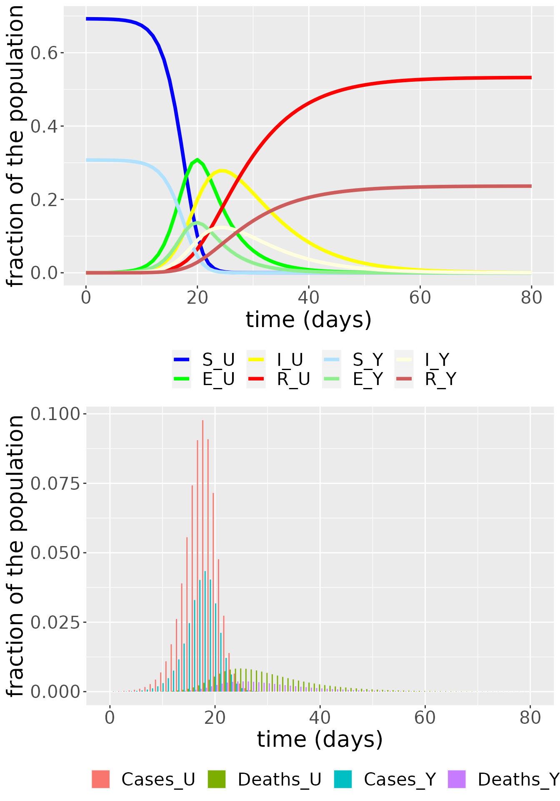
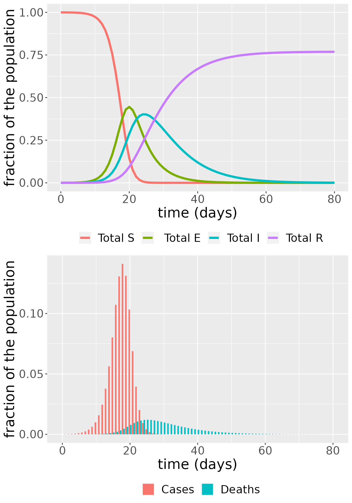
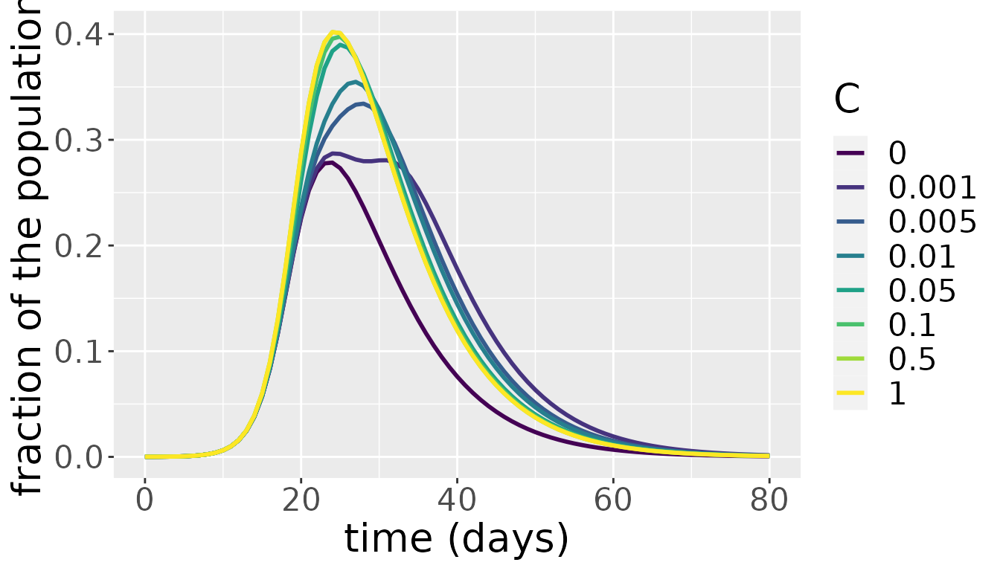

Urban and rural metapopulations model
Solveig A. van der Vegt
SEIRD_rural_urban.Rmd
library(comomodels)
library(ggplot2)
library(glue)
library(deSolve)
library(reshape2)
library(gridExtra)
library(viridis)
#> Loading required package: viridisLiteIntroduction
Here we consider an extension to the basic SEIRD model that considers multiple interacting communities. For simplicity, we consider only two interacting communities here. Each community consists of a susceptible, exposed, infectious and recovered population. Although one can consider two generic communities, in this implementation we consider specifically one urban and one rural community, and use data from the WHO and UN to specify contacts in each community. In the following sections, we will explain the equations of the model, the implementation in this package and how to use it, and discuss briefly how the connectedness level between communities affects the results.
The mathematical model
The equations
We base our model of connected communities on the model presented by Tun et al. (2021). We designate the urban community \(U\) and the rural community \(Y\). Following the same naming pattern for variables and parameters as used for the basic SEIRD model, the ordinary differential equations describing how the populations evolve are as follows, where variable \(X_Z\) (for \(X \in \{S,E,I,R\}, Z \in \{U, Y\}\)) designates the population of individuals with infectedness status \(X\) in community \(Z\),
\[\begin{equation} \begin{split} \frac{\text{d}S_U}{\text{d}t} = &-\beta S_U \left((I_U+I_Y) (\phi_U N_U + \phi_Y N_Y) C + \frac{I_U}{\phi_U}N_U(1-C)\right),\\ \frac{\text{d}S_Y}{\text{d}t} = &-\beta S_Y \left((I_U+I_Y) (\phi_U N_U + \phi_Y N_Y) C + \frac{I_Y}{\phi_Y}N_Y(1-C)\right),\\ \frac{\text{d}E_U}{\text{d}t} = & \beta S_U \left((I_U+I_Y) (\phi_U N_U + \phi_Y N_Y) C + \frac{I_U}{\phi_U}N_U(1-C)\right) - \kappa E_U,\\ \frac{\text{d}E_Y}{\text{d}t} = & \beta S_Y \left((I_U+I_Y) (\phi_U N_U + \phi_Y N_Y) C + \frac{I_Y}{\phi_Y}N_Y(1-C)\right) - \kappa E_Y,\\ \frac{\text{d}I_U}{\text{d}t} = & \kappa E_U - (\gamma + \mu)I_U ,\\ \frac{\text{d}I_Y}{\text{d}t} = & \kappa E_Y - (\gamma + \mu)I_Y,\\ \frac{\text{d}R_U}{\text{d}t} = & \gamma I_U,\\ \frac{\text{d}R_Y}{\text{d}t} = & \gamma I_Y,\\ \frac{\text{d}D_U}{\text{d}t} = & \mu I_U,\\ \frac{\text{d}D_Y}{\text{d}t} = & \mu I_Y.\\ \end{split} \end{equation}\]
In the above equations, \(\phi_U\) is the fraction of the population that lives in an urban environment, \(\phi_Y\) is the fraction of the population that lives in a rural environment, \(N_U\) is the average number of contacts that an urban individual has in a day, and \(N_Y\) is the average number of contacts that a rural individual has in a day, so \((\phi_U N_U + \phi_Y N_Y)\) is the average number of contacts for any individual. \(C\) is the connectedness parameter, where \(C=1\) means the communities are well-mixed with each other, and \(C=0\) means the two communities do not interact at all.
The difference between this model and the basic SEIRD model is the computation of the number of infectious contacts that a susceptible individual has. This is reflected in the equations for \(S_Z\) and \(E_Z\). Individuals in either community can either come into contact with people from their own community or from the other community. The extent to which the latter happens is determined by the connectedness parameter \(C\). If the communities are completely separate, i.e. \(C=0\), the probability that a susceptible individual in community \(Z\) interacts with an infectious individual is the number of contacts that someone in that community has, \(N_Z\), multiplied by the probability that a contact is infectious, \(I_Z/\phi_Z\). If the communities are well-mixed with each other, the probability is again the number of contacts multiplied by the probability that a contact is infectious, although now the number of contacts that an individual has is averaged over the communities, so \(\phi_U N_U + \phi_Y N_Y\), and the individual can encounter people from either community so the probability of an infectious contact is \(I_U+I_Y\). The extent to which the communities are connected, designated by \(C\), determines to which extent the two extreme contact patterns play a role, and thus we obtain the weighted average that appears in the equations above which designates the total probability of a susceptible individual in \(Z\) having an infectious contact: \((I_U+I_Y) (\phi_U N_U + \phi_Y N_Y) C + \frac{I_Z}{\phi_Z}N_Z(1-C)\).
The contact parameters \(N_Z\)
The average number of contacts for an individual in a given community \(Z\), \(N_Z\), is computed based on the country-specific contact matrices (Prem et al. 2020), age demographics (“World Population Prospects 2019, Online Edition. Rev. 1” 2019), and urban/rural populations split (“Rural Population (% of Total Population)” 2018). For a detailed discussion of the contact matrices, see the age-structured model. The number of contacts in community \(Z\) of a specific country is computed by first adding up all the contacts in the contact matrix for each age group so we obtain the total number of contacts that an individual in a specific age group has in a day. We obtain the vector with population by age for community \(Z\) by taking the age demographic data for the whole country and multiplying it by the fraction of the population that lives in community \(Z\). We then take a weighted average over the age groups, using the age demographic data as weights. Lastly, we divide the number of contacts by the total population size to normalize the number of contacts (all populations in the model are normalized). We thus get \[\begin{equation} N_{Z} = \frac{ \sum_{m = 1}^K c_Z(n,m)\cdot y_Z}{\text{total population}}, \end{equation}\] where \(c_Z(n,m)\) is the entry in contact matrix \(c\) for community \(Z\) denoting the number of contacts someone in age group \(n\) has with individuals in age group \(m\), and \(y_Z\) is the vector designating the number of individuals in each age group in community \(Z\).
Implementation and use
In this section, we walk through how to use the model. First, we will show how to load and prep the appropriate data, which is included in the package. We’ll then walk through an example simulation. In the last subsection, we’ll briefly discuss the effect of varying the connectedness parameter \(C\).
Loading and prepping country-specific data
First, we load the contact matrices for the urban and rural communities. Because the two sets of contact matrices don’t cover the exact same countries, we also make a list of countries for which we have both contact matrices, which we can use later to check if the choice of country is valid.
# load contact matrices
load("../data/contact_all_urban.rda") # ROWS are age of person, COLUMNS are age of contact
names_urban <- names(contact_all_urban)
load("../data/contact_all_rural.rda")
names_rural <- names(contact_all_rural)
names_common <- intersect(names_urban,names_rural)We also load in all demographic data, and load in a list showing the three-letter code for each country.
#import all demographic data
# data on percentage of the population that is rural
load("../data/percentrural_by_country.rda")
# age demographic breakdown into 5 year age categories
load("../data/agedemographics_by_country.rda")
# conversion table from 3 letter country codes to full names
load("../data/country_codetoname.rda")Next, we select a country, in this case Tunisia. This needs to happen with a three letter code. We check if the country is valid choice by checking if it appears in the list of countries for which we have both a rural and urban contact matrix.
# specify country
country <- "TUN"
if (!(country %in% names_common)) {
stop(paste(country," is not a valid three-letter country code."))
}Now that we have specified a country, we extract from the data what percentage of its population is rural. Because the most recent year that all our data source have in common is 2019, we select all our data from that year.
# get fraction of population that is rural
country_rural <- percentrural_by_country$`2019`[percentrural_by_country$`Country Code` == country]
frac_rural <- country_rural/100 #turn percentage into fractionThe last step in our data prep is to create the vector of normalized population per age group for the specific country. The contact matrices have 5-year age groups with the oldest group being 80+. Because the age demographics go up to 100+, we need to sum the last five age groups in the demographics vector to ensure compatibility with the contact matrices.
# get fraction of population in each 5-year age range
# get full name of country
country_fullname <- country_codetoname$CountryName[country_codetoname$CountryCode == country]
# extract age demographic vector
pop_byage_2019 <- agedemographics_by_country[(agedemographics_by_country$`Region, subregion, country or area *` == country_fullname
& agedemographics_by_country$`Reference date (as of 1 July)` == 2019),5:25]
pop_byage_2019 <- as.double(pop_byage_2019)
# normalize to fractions of the total population
pop_byage_2019 <- pop_byage_2019/sum(pop_byage_2019)
# must sum last five entries because contact matrices have an 80+ category instead of 100+
pop_byage_2019 <- c(pop_byage_2019[1:15], sum(pop_byage_2019[16:20]))Basic simulation
We start by creating an instance of the model class,
model <- SEIRD_RU()followed by setting the parameter values of the model that are not determined by the demographics or contact matrices.
b = 0.3 # probability of infection
k = 0.2 # 1/(incubation period in days)
g = 0.1# 1/(days between infection and recovery)
m = 0.03 # probability of death, cases-fatality ratio.
C = 1 # connectedness parameter
transmission_parameters(model) <- list(b, k, g, m, C)Next we set the initial conditions of the model, where we specify separately what fraction of the population is infected in the urban community and what fraction is infected in the rural community. Note here that these are fractions of the total population across both communities! Because the populations are normalized, all initial conditions together must sum to one. In this example, we seed the epidemic in the urban community.
start_infected_urban = 0.0001
start_infected_rural = 0
S0U = 1-frac_rural - start_infected_urban
E0U = 0
I0U = start_infected_urban
R0U = 0
S0Y = frac_rural - start_infected_rural
E0Y = 0
I0Y = start_infected_rural
R0Y = 0
initial_conditions(model) <- list(S0U, E0U, I0U, R0U,
S0Y, E0Y, I0Y, R0Y)In this implementation of the SEIRD model with two communities, there are several options for inputting data about the age demographics of the communities and the contacts they have. You can choose to use the data sets in this package that provide this information for specific countries. Note that is you want to do this, i.e. use contact matrices and demographic data, it is essential that you set the demographic data BEFORE entering the contact matrices. This is done via the code below. The number of contacts and fraction of the population that live in a rural environment are calculated for you.
#set demographic data
country_demog(model) <- list(pop_byage_2019*(1-frac_rural),pop_byage_2019*frac_rural)
# set contact matrices
contact_rates(model) <- list(contact_all_urban[[country]],contact_all_rural[[country]])Instead of using the data sets you can also choose to set the contact rates and the fraction of the population that is rural yourself. This is done by assigning the fraction rural, a single number which between 0 and 1, directly to country_demog(model), and assigning a list of two values to contact_rates(model). Note that if you wish to use contact matrices, full age demographic data is required, but you are free to use age demographic data and set the contact rates manually.
The last thing to do is to set the time span over which to simulate the model, and then run it.
tend = 80
time = seq(0, tend, by = 1)
# run simulation
output <- run(model, time)
dim(output)
#> [1] 972 4The output from the model can then be plotted such that all populations are plotted separately for both communities
# Communities plotted separately
i <- sapply(output, is.factor)
output[i] <- lapply(output[i], as.character)
SEIR_df <- subset(output, compartment != "Incidences_U" & compartment != "Deaths_U" & compartment != "Incidences_Y" & compartment != "Deaths_Y")
SEIR_df$compartment <- factor(SEIR_df$compartment, levels = c("S_U", "E_U", "I_U", "R_U", "S_Y", "E_Y", "I_Y", "R_Y"))
col <- c("S_U" = "blue", "E_U" = "green", "I_U" = "yellow", "R_U" = "red", "S_Y" = "lightskyblue1", "E_Y" = "lightgreen", "I_Y" = "lightyellow", "R_Y" = "indianred")
SEIRplot <- ggplot(SEIR_df, aes(x = time, y = value)) +
geom_line(aes(color = compartment), size = 1.5) +
labs(x = "time (days)", y = "fraction of the population") +
theme(legend.position = "bottom", legend.title = element_blank(), text = element_text(size = 20)) +
scale_color_manual(values = col)
case_df <- subset(output, compartment == "Incidences_U" | compartment == "Deaths_U" | compartment == "Incidences_Y" | compartment == "Deaths_Y")
case_df$compartment <- factor(case_df$compartment, levels = c("Incidences_U", "Deaths_U", "Incidences_Y", "Deaths_Y"))
col <- c("Cases_U" = "grey28", "Deaths_U" = "black", "Cases_Y" = "lightgray", "Deaths_Y" = "darkgray")
inc_plot <- ggplot(case_df, aes(x = time, y = value, fill = compartment)) +
geom_bar(stat="identity", position = position_dodge()) +
labs(x = "time (days)", y = "fraction of the population") +
theme(legend.position = "bottom", legend.title = element_blank(), text = element_text(size = 20)) +
scale_fill_discrete(labels = c("Cases_U","Deaths_U","Cases_Y","Deaths_Y"))
grid.arrange(SEIRplot,inc_plot,nrow = 2) or such that the populations are summed across the communities and we can observe the dynamics of the susceptible, exposed, infectious, recovered and dead individuals in the whole population.
SEIR_total <- SEIR_df
CD_total <- case_df
SEIR_total$value[SEIR_total$compartment == "S_U"] <- SEIR_df$value[SEIR_df$compartment == "S_U"] + SEIR_df$value[SEIR_df$compartment == "S_Y"]
SEIR_total$value[SEIR_total$compartment == "E_U"] <- SEIR_df$value[SEIR_df$compartment == "E_U"] + SEIR_df$value[SEIR_df$compartment == "E_Y"]
SEIR_total$value[SEIR_total$compartment == "I_U"] <- SEIR_df$value[SEIR_df$compartment == "I_U"] + SEIR_df$value[SEIR_df$compartment == "I_Y"]
SEIR_total$value[SEIR_total$compartment == "R_U"] <- SEIR_df$value[SEIR_df$compartment == "R_U"] + SEIR_df$value[SEIR_df$compartment == "R_Y"]
CD_total$value[CD_total$compartment == "Incidences_U"] <- case_df$value[case_df$compartment == "Incidences_U"] + case_df$value[case_df$compartment == "Incidences_Y"]
CD_total$value[CD_total$compartment == "Deaths_U"] <- case_df$value[case_df$compartment == "Deaths_U"] + case_df$value[case_df$compartment == "Deaths_Y"]
SEIR_total <- SEIR_total[SEIR_total$compartment != "S_Y" & SEIR_total$compartment != "E_Y" & SEIR_total$compartment != "I_Y" & SEIR_total$compartment != "R_Y",]
CD_total <- CD_total[CD_total$compartment != "Incidences_Y" & CD_total$compartment != "Deaths_Y",]
SEIRplot_total <- ggplot(NULL, aes(x = time, y = value)) +
geom_line(data = SEIR_total, aes(color = compartment), size = 1.5) +
labs(x = "time (days)", y = "fraction of the population") +
scale_colour_discrete(labels = c("Total S", " Total E","Total I","Total R")) +
theme(legend.position = "bottom", legend.title = element_blank(), text = element_text(size = 20))
incplot_total <- ggplot(CD_total, aes(x = time, y = value, fill = compartment)) +
geom_bar(stat="identity", position = position_dodge()) +
labs(x = "time (days)", y = "fraction of the population") +
theme(legend.position = "bottom", legend.title = element_blank(), text = element_text(size = 20)) +
scale_fill_discrete(labels = c("Cases","Deaths"))
grid.arrange(SEIRplot_total,incplot_total,nrow = 2)
The effect of varying \(C\)
The connectedness parameter \(C\) indicates how connected the two communities are, i.e. how much the individuals in each are expected to interact with each other. At the extreme ends we have the communities completely connected and acting as one big community for \(C=1\), and completely disconnected and acting as separate communities for \(C=0\). We explore what happens for intermediate values by simulating the model for a range of values of \(C\) and plotting the total infectious population over both communities for each simulation.
for (i in c(0,0.001,0.005,0.01,0.05,0.1,0.5,1)) {
C = i # connectedness parameter
transmission_parameters(model) <- list(b, k, g, m, C)
out_C <- run(model, time)
temp_I <- data.frame(C = C, t = time,compartment = "U",value = out_C$value[out_C$compartment == "I_U"] + out_C$value[out_C$compartment == "I_Y"])
#temp_IY <- data.frame(Cvalue = C, t = time,compartment = "Y",value = out_C$value[out_C$compartment == "I_Y"])
if (i == 0){
result <- temp_I
} else {
result <- rbind(result,temp_I)
}
}
ggplot(result, aes(x = t, y = value)) +
geom_line(aes(color = as.factor(C)), size = 1) +
labs(x = "time (days)", y = "fraction of the population") +
scale_color_viridis(discrete = TRUE)+
labs(color = "C") +
theme(text = element_text(size = 20))
The above plot shows that up to approximately \(C=0.1\), the value of \(C\) has a significant impact on total number of infectious individuals across the communities. Varying the value of \(C\) between 0.1 and one, however, barely makes a difference. As both communities are subject to the same parameter values and the average number of contacts that individuals in both communities have don’t differ a lot in most countries, this result is not surprising. Above a certain level of interaction, the few infectious people in one community will quickly interact with individuals from the other community, spreading the infection. At that point, both communities develop their own epidemic under the same parameter values and the mixing between them further helps in synchronizing the waves of the epidemic in both communities. Only for very low levels of interaction does the initial difference in the number of infectious individuals have a lasting effect on epidemic dynamics.
References
Prem, Kiesha, Kevin van Zandvoort, Petra Klepac, Rosalind M Eggo, Nicholas G Davies, Alex R Cook, and Mark Jit. 2020. “Projecting Contact Matrices in 177 Geographical Regions: An Update and Comparison with Empirical Data for the Covid-19 Era.” medRxiv. https://doi.org/10.1101/2020.07.22.20159772.
“Rural Population (% of Total Population).” 2018. Data. The World Bank. https://data.worldbank.org/indicator/SP.RUR.TOTL.ZS.
Tun, Sai Thein Than, Daniel M. Parker, Ricardo Aguas, and Lisa J. White. 2021. “The Assembly Effect: The Connectedness Between Populations Is a Double-Edged Sword for Public Health Interventions.” Malaria Journal 20 (1): 189. https://doi.org/10.1186/s12936-021-03726-x.
van den Driessche, Pauline. 2017. “Reproduction Numbers of Infectious Disease Models.” Infectious Disease Modelling 2 (3): 288–303. https://doi.org/10.1016/j.idm.2017.06.002.
“World Population Prospects 2019, Online Edition. Rev. 1.” 2019. United Nations, Department of Economic; Social Affairs, Population Division (2019). https://population.un.org/wpp/Download/Standard/Population/.